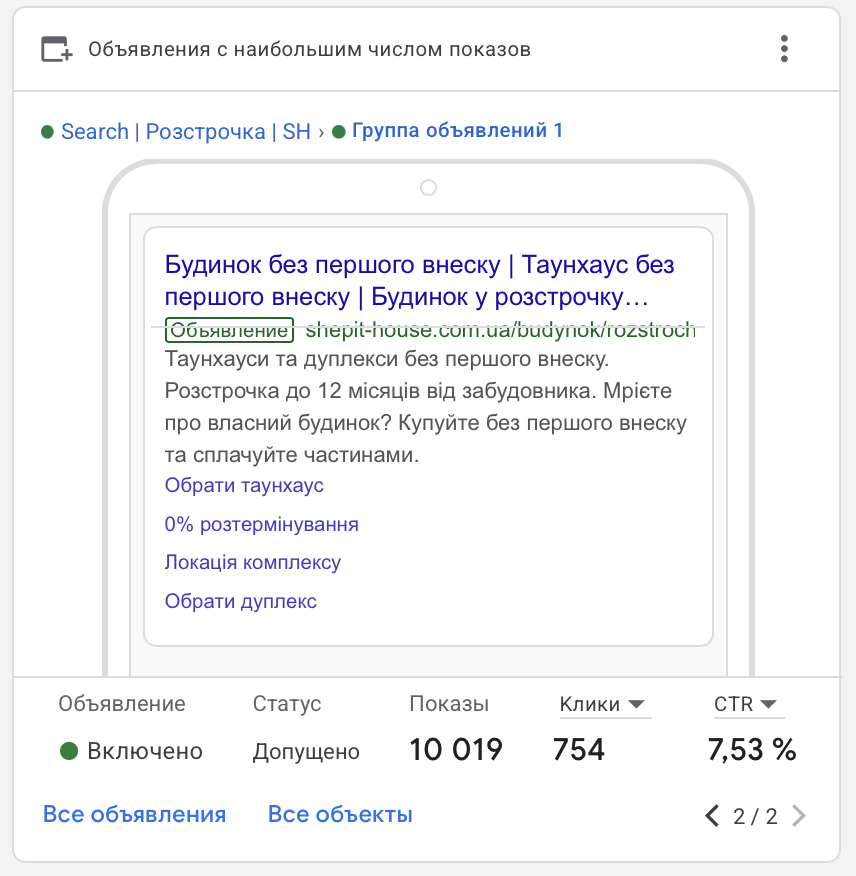

Сначала — задача, потом формат
Лендинг и сайт не конкурируют друг с другом. Это разные инструменты внутри одной системы. Первый помогает быстро сфокусировать внимание на конкретном предложении. Второй собирает доверие, ассортимент, контент и несколько сценариев обращения.
Ошибка начинается, когда формат выбирают по привычке: «нам нужен сайт, потому что он солиднее» или «сделаем лендинг, потому что быстрее». В обоих случаях можно получить красивую страницу, которая не помогает продажам.
Когда достаточно лендинга
Лендинг оправдан, если у проекта один ясный вход: запуск жилого комплекса, отдельная услуга, рекламная кампания или тест нового направления. Он помогает быстро связать сообщение, рекламу и форму обращения.
- Одно ключевое предложение и одна аудитория.
- Ограниченная рекламная кампания с понятной метрикой.
- Нужно быстро проверить спрос и оффер.

Когда нужен сайт
Сайт нужен, когда пользователь выбирает между несколькими объектами, форматами или услугами. Здесь важны структура, фильтрация, доказательства, SEO-страницы и последовательный путь от первого визита до обращения.
Это не означает, что сайт должен быть большим с первого дня. Важно заложить архитектуру: разделы, типы страниц, аналитику и возможность расширения без пересборки всего продукта.
Сайт — не замена рекламной кампании
Даже сильный сайт не создаёт спрос сам по себе. Но он делает трафик понятнее: позволяет видеть, что интересует пользователя, какие страницы приводят к заявке и где процесс теряет человека.
С чего начать проект
Опишите предложение, аудиторию, каналы привлечения и то действие, которое должен совершить пользователь. После этого становится понятно, нужен ли первый лендинг, компактный сайт или сразу полноценная система страниц.